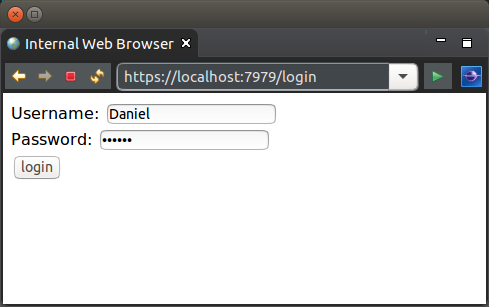
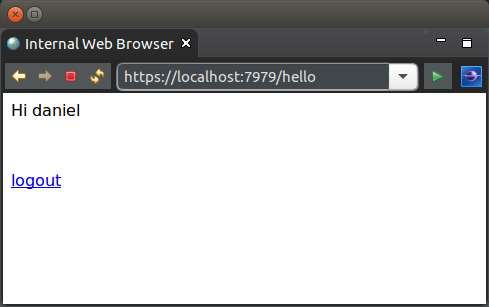
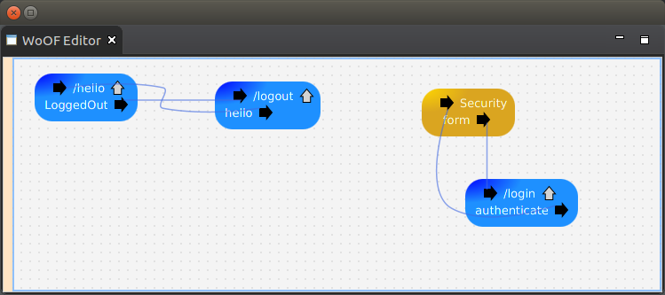

This tutorial looks at configuring authentication.
WoOF provides various authentication schemes along with the ability to customise your own authentication scheme (see HttpSecuritySource for more details). This tutorial will focus on form based authentication.
The below example for this tutorial will demonstrate only allowing a logged in user to view a page. The simple key pages for this tutorial are as follows:
The page being restricted from access is as follows.
<html>
<body>
<p>Hi ${username}</p>
<br />
<p><a href="#{logout}">logout</a></p>
</body>
</html>
With the backing logic class.
public class HelloLogic {
@Data
public static class TemplateData {
private final String username;
}
@HttpAccess
public TemplateData getTemplateData(HttpAccessControl accessControl) {
String username = accessControl.getPrincipal().getName();
return new TemplateData(username);
}
@Next("LoggedOut")
public void logout(HttpAuthentication<?> authentication) {
authentication.logout(null);
}
}
The dependency on HttpSecurity requires the user to be logged in. Should the user not be authenticated, creation of this dependency will cause a AuthenticationRequiredException to be thrown. WoOF automatically handles this exception by:
Since the getTemplateData requires a logged in user the page will not be rendered unless there is a logged in user.
To allow the page to be rendered with or without a logged in user, depend on HttpAuthentication to check if the user is logged in.
The following is the configuration for authentication.
While some authentication schemes are straight forward (e.g. Basic), others such as form based login require application specific behaviour (e.g. a form login page). On selecting the authentication scheme, flows necessary for the chosen authentication will be displayed for configuration. In the case of this tutorial, the form login flow and authentication flow are required to be configured to/from the login page. This allows the application to tailor the login page while still being able to re-use the FormHttpSecuritySource.
To enable differing credential stores (e.g. database, LDAP, etc), the WoOF supplied authentication depends on a CredentialStore managed object being configured. The following is the managed object configuration for this tutorial.
<objects> <managed-object source="net.officefloor.web.security.store.MockCredentialStoreManagedObjectSource" type="net.officefloor.web.security.store.CredentialStore" /> </objects>
In this case a mock implementation is used that validates the user by ensuring the password matches the username. This is a simple implementation useful for testing.
For production, another CredentialStore should be used. WoOF comes with existing implementations for standard credential stores. Customised implementations may also be used for bespoke environments.
The login page is as follows.
<html>
<head>
<title>Login</title>
</head>
<body>
<form action="#{login}" method="POST">
Username: <input type="text" name="username" /> <br />
Password: <input type="password" name="password" /> <br />
<input type="submit" value="login" />
</form>
</body>
</html>
With the backing logic class.
public class LoginLogic {
@Data
@HttpParameters
public static class Form implements Serializable {
private static final long serialVersionUID = 1L;
private String username;
private String password;
}
@FlowInterface
public static interface Flows {
void authenticate(HttpCredentials credentials);
}
public void login(Form form, Flows flows) {
flows.authenticate(new HttpCredentialsImpl(form.getUsername(), form.getPassword()));
}
}
The FormHttpSecuritySource requires the credentials to be provided within a HttpCredentials as a parameter.
The remaining code is included for completeness.
The unit test demonstrates logging in and logging out.
@RegisterExtension
public final MockWoofServerExtension server = new MockWoofServerExtension();
private WritableHttpCookie session;
@Test
public void login() throws Exception {
// Ensure require login to get to page
MockHttpResponse loginRedirect = this.server.send(MockHttpServer.mockRequest("/hello"));
assertEquals(303, loginRedirect.getStatus().getStatusCode(), "Ensure redirect");
loginRedirect.assertHeader("location", "https://mock.officefloor.net/login");
// Obtain the session cookie
this.session = loginRedirect.getCookie(HttpSessionManagedObjectSource.DEFAULT_SESSION_ID_COOKIE_NAME);
// Login
MockHttpRequestBuilder loginRequest = MockHttpServer.mockRequest("/login+login?username=Daniel&password=Daniel")
.secure(true).cookie(this.session.getName(), this.session.getValue());
MockHttpResponse loggedInRedirect = this.server.send(loginRequest);
assertEquals(200, loggedInRedirect.getStatus().getStatusCode(),
"Ensure successful login: " + loggedInRedirect.getEntity(null));
// Ensure now able to access hello page
MockHttpResponse helloPage = this.server
.send(MockHttpServer.mockRequest("/hello").cookie(this.session.getName(), this.session.getValue()));
String helloPageContent = helloPage.getEntity(null);
assertEquals(200, helloPage.getStatus().getStatusCode(), "Should obtain hello page: " + helloPageContent);
assertTrue(helloPageContent.contains("<p>Hi Daniel</p>"), "Ensure hello page with login: " + helloPageContent);
}
@Test
public void logout() throws Exception {
// Login
this.login();
// Logout
MockHttpResponse logoutRedirect = this.server.send(
MockHttpServer.mockRequest("/hello+logout").cookie(this.session.getName(), this.session.getValue()));
assertEquals(303, logoutRedirect.getStatus().getStatusCode(),
"Ensure logout: " + logoutRedirect.getEntity(null));
logoutRedirect.assertHeader("location", "/logout");
// Attempt to go back to page (but require login)
MockHttpResponse loginPage = this.server
.send(MockHttpServer.mockRequest("/hello").cookie(this.session.getName(), this.session.getValue()));
assertEquals(303, loginPage.getStatus().getStatusCode(), "Ensure redirect");
loginPage.assertHeader("location", "https://mock.officefloor.net/login");
}
Return to the tutorials.